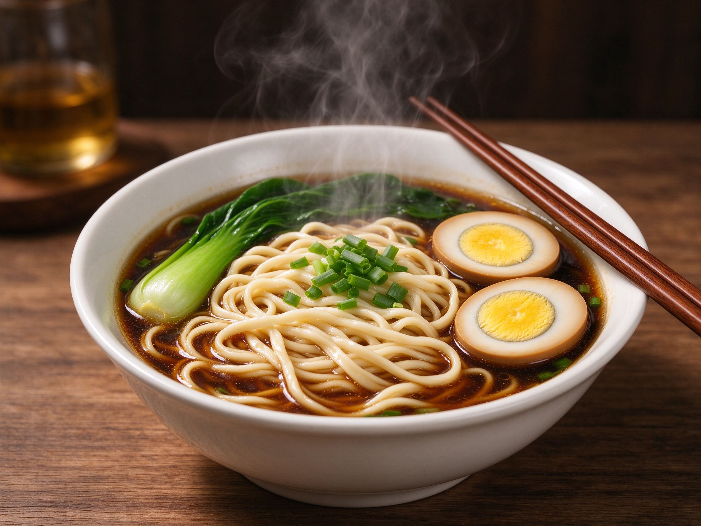

5 Easy Chinese Noodle Recipes
A good noodle bowl is comfort in a bowl. These five Chinese noodle recipes are fast, simple, and absolutely delicious — perfect for weeknight dinners.
1. Scallion Oil Noodles
Fry sliced scallions slowly in oil until golden. Add soy sauce and a little sugar. Toss with cooked noodles — that's it. Deceptively simple, seriously good.
2. Dan Dan Noodles
Cook noodles, then top with a sauce of tahini or peanut butter, chili oil, soy sauce, and a spoonful of minced pork cooked with Sichuan pepper. Spicy, nutty, addictive.
3. Zhajiangmian (Fried Sauce Noodles)
Stir-fry minced pork with fermented soybean paste and a little cucumber, then serve over thick noodles with shredded cucumber and scallions.
4. Tomato Egg Noodles
A beloved home classic — soft scrambled eggs and juicy tomatoes simmered into a light sauce, poured over noodles. Warm, comforting, and quick.
5. Soy-Sesame Cold Noodles
For warm days, toss chilled noodles with soy sauce, sesame oil, vinegar, and sliced cucumber. Light, refreshing, and ready in minutes.
Noodle Tip
Cook noodles in plenty of boiling, salted water and finish them in the sauce, not under running water — this keeps the sauce clinging to every strand.
Round out the table with egg fried rice or fresh dumplings.